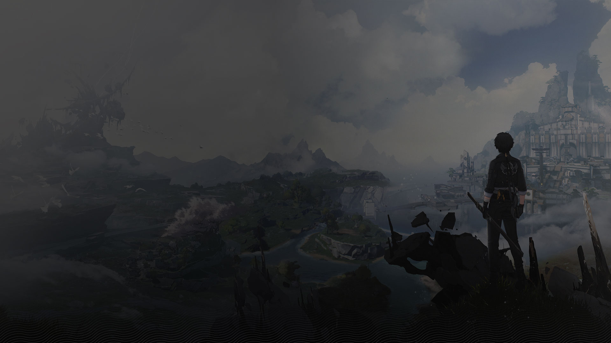
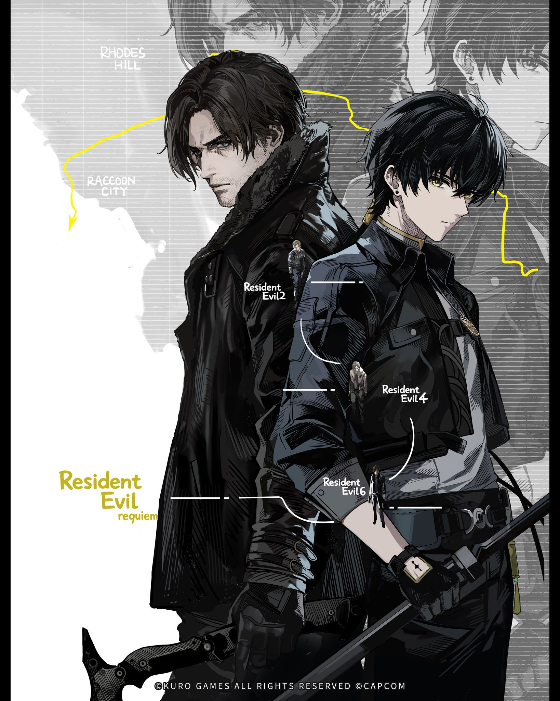
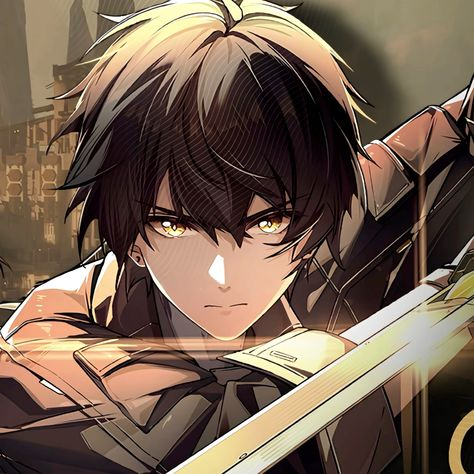
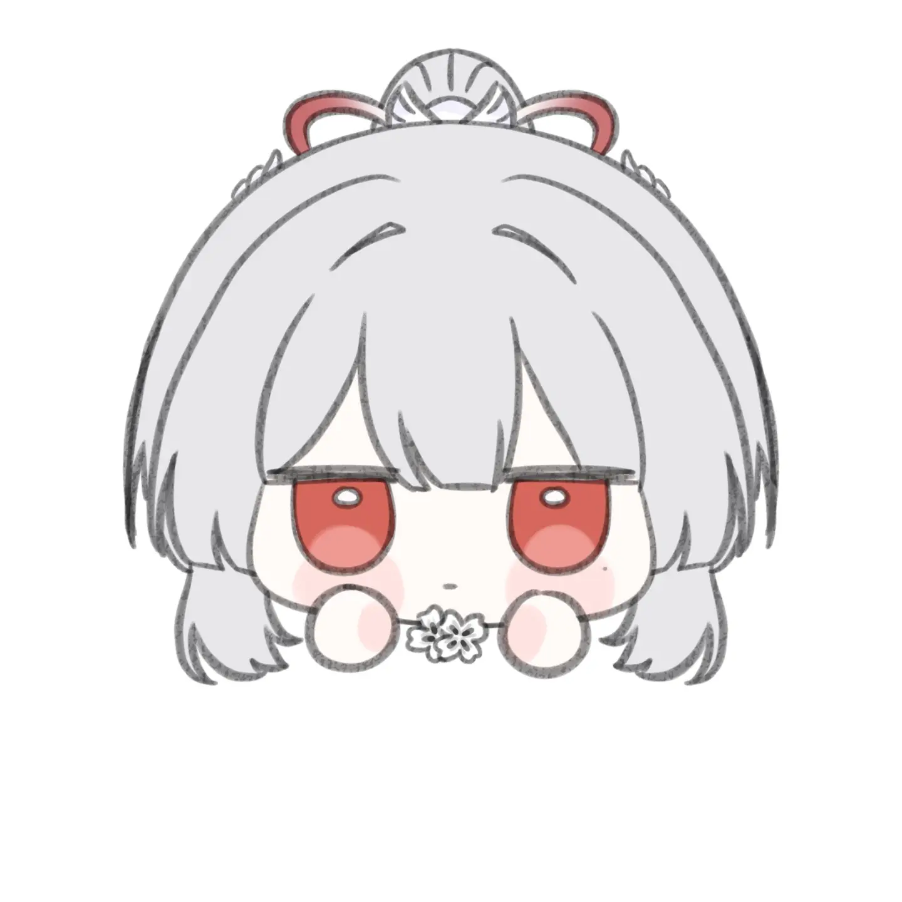
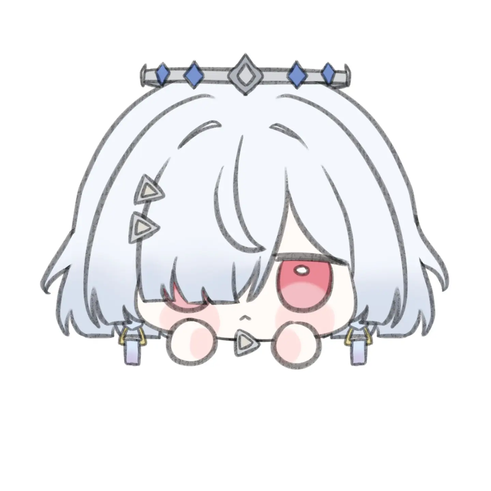
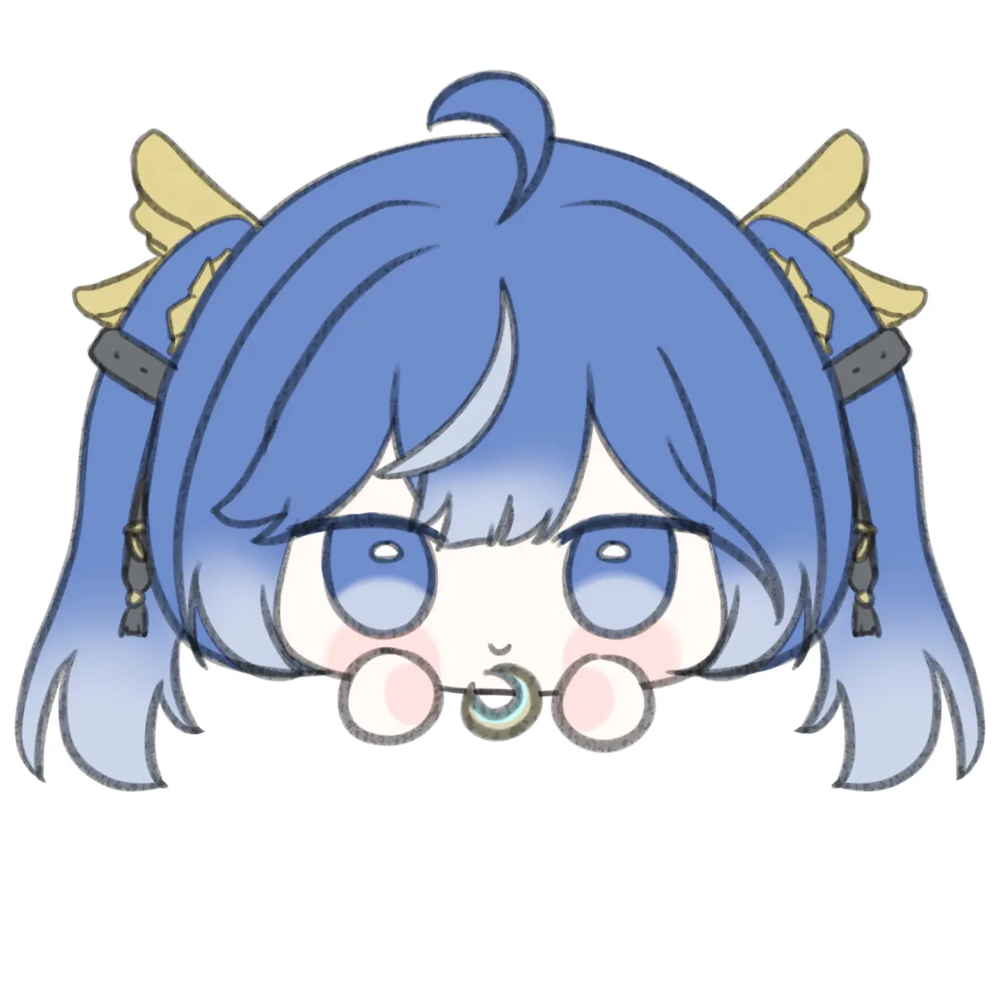
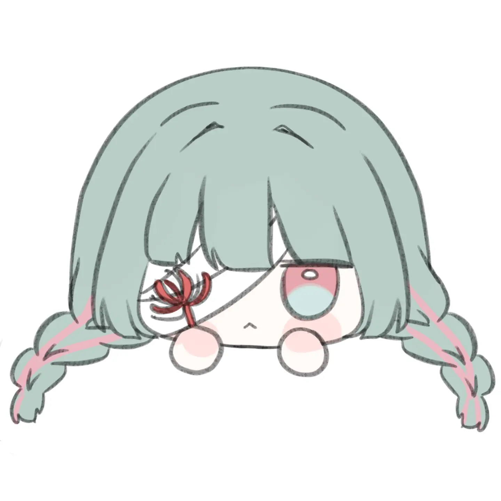

WuWa 2nd Anniversary Cosplayer Recruitment is Now Open!
Apply Now

Wuthering Waves is an open-world action RPG developed by Kuro Games. Set on the post-apocalyptic world of Solaris-3, you play as the Rover — an amnesiac wanderer awakened after the catastrophic Cataclysm.
In a world still recovering from the Cataclysm, Resonators wield the power of sound to fight back the Tacet Discord. Uncover lost memories, forge bonds with iconic characters, and explore a living world filled with secrets, lore, and breathtaking landscapes.
Official Site
Solaris-3 is alive. From the frozen peaks of Mt. Firmament to the neon-lit ruins of Jinzhou, every corner of this world holds secrets waiting to be uncovered. Glide, climb, and dive into an open world built for true exploration.
Every Resonator fights differently. Chain parries, dodge counters, and Resonance Chains to unleash devastating combos. Whether you play aggressive or calculated, the battlefield bends to your skill — not just your stats.
You are the Rover — a wanderer who survived the Cataclysm with no memory and an unknown power. Piece together the truth of a fractured world, forge bonds with Resonators, and decide the fate of Solaris-3 one echo at a time.

Wuthering Waves Version 3.3 Official Trailer | Reverbs From the End of Galaxies
Official Trailer
Official Trailer
Official Trailer
Resonators of Solaris-3 — each carrying their own story, power, and purpose.

A wanderer who survived the Cataclysm. No memory, unknown power — yet the fate of Solaris-3 rests on their shoulders.

A wanderer of the frozen north, Denia wields ice with quiet precision. Calm under pressure, her resolve never wavers even at the edge of the storm.

Silent as snowfall, sharp as light. Hiyuki channels Spectro energy through a blade that cuts faster than sound — and leaves no trace behind.

Fierce, unyielding, and burning with purpose. Sigrika harnesses Fusion energy to devastate any who stand in her way — she fights not for glory, but for those she protects.
What Rovers across the world are saying about Wuthering Waves.

The combat system is unlike anything I've played. Parrying, dodging, chaining Resonance Skills — it rewards actual skill, not just pulling the best characters.

Kuro Games actually listens to the community. The improvements from launch to now are massive. The open world exploration alone makes it worth every hour.
The Echo system is genius. Collecting and building Echo sets adds a whole layer of depth beyond just leveling characters. Hundreds of hours and I'm still finding new builds.

Even as a casual player the story pulled me in completely. Jinhsi's arc in Jinzhou is one of the best narratives I've experienced in any gacha game. Period.

The endgame content keeps me coming back every patch. Tower of Adversity pushes your character-building to the limit. No other mobile game hits this level of polish.
Patch notes, character reveals, and community highlights from Wuthering Waves.

{kind=link}
{kind=link}
{kind=link}
{kind=link}
{kind=link}